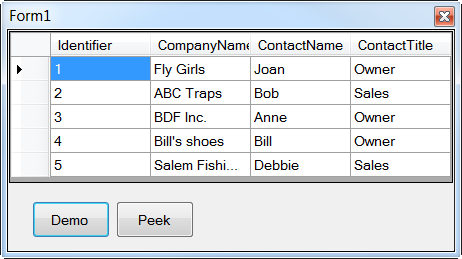

Adding new records into Microsoft Access tables and display in a DataGridView
Description
This article demonstrates how to add new rows to a Microsoft Access database table where all operations are done without Visual Studio IDE data wizards.
08/2014 The following shows how to do this in SQL-Server in both C# and VB.NET
Adding new records into SQL-Server table and update a DataGridView in real time
12/9/2014 added a secondary example in the VB.NET form project that simply shows that we should consider trimming values being sent into a INSERT statement.
12/8/2015 added C# class library, updated solution to VS2013
A well designed solution will separate database operations from the user interface thus all data operations are done in a class project. These operations could be placed in the same project but this is a better design if you want
to use the code in other solutions.
To keep things simple data is added to the database table via mocked data in a list because if I allowed the operator to add data there would be a need for validation which is not within the scope of this demo which is to show
how to add rows to the backend database table then upon success add rows to the DataGridView.
At program startup data is loaded into a DataTable which is used to set the DataSource of a BindingSource. Note, the BindingSource is a great component for doing things like find, re-positioning, adding, editing and removal of
data but in this demonstration only a find is used, again like validation discussed above I am keeping this simple. After the BindingSource DataSource is set to the DataTable we set the BindingSource as the DataSource to the DataGridView which will show several
records.
Pressing the Demo button will iterate through a list one by one and insert a new row in the backend database customer table. A second SQL statement is executed immediately to get the new primary key for the record just added. This
new primary key is then passed back to the UI. The UI will then add a new DataRow to the DataTable which is the DataSource of the BindingSource. Adding the record will then be displayed in the DataGridView. The key here is the secondary SQL statement Select
@@Identity. Caveat, the same can be done with Microsoft SQL-Server but we can use one SQL statement for the insert and one for the new primary key together in the command object's CommandText but not with OleDb and Microsoft Access.
Please read all the comments in the code which will assist you to use this logic in your applications. Also, the same logic shown here will work in C# with one change, the SQL statements must be done with the @ symbol preceeding
the string and without the tags. What I did here for the C# version is use the same class project as the VB.NET Windows forms project.

Public Function AddNewRow(ByVal sender As Customer, ByRef Identfier As Integer) As Boolean
Dim Success As Boolean = True
Try
Using cn As New OleDb.OleDbConnection With {.ConnectionString = Builder.ConnectionString}
Using cmd As New OleDb.OleDbCommand With {.Connection = cn}
cmd.CommandText = InsertStatement
cmd.Parameters.AddWithValue("@CompanyName", sender.CompanyName)
cmd.Parameters.AddWithValue("@ContactName", sender.ContactName)
cmd.Parameters.AddWithValue("@ContactTitle", sender.ContactTitle)
cn.Open()
cmd.ExecuteNonQuery()
cmd.CommandText = "Select @@Identity"
Identfier = CInt(cmd.ExecuteScalar)
End Using
End Using
Catch ex As Exception
Success = False
End Try
Return Success
End Function
Public Function AddNewRow(ByVal sender As Customer, ByRef Identfier As Integer) As Boolean Dim Success As Boolean = True Try Using cn As New OleDb.OleDbConnection With {.ConnectionString = Builder.ConnectionString} Using cmd As New OleDb.OleDbCommand With {.Connection = cn} cmd.CommandText = InsertStatement cmd.Parameters.AddWithValue("@CompanyName", sender.CompanyName) cmd.Parameters.AddWithValue("@ContactName", sender.ContactName) cmd.Parameters.AddWithValue("@ContactTitle", sender.ContactTitle) cn.Open() cmd.ExecuteNonQuery() cmd.CommandText = "Select @@Identity" Identfier = CInt(cmd.ExecuteScalar) End Using End Using Catch ex As Exception Success = False End Try Return Success End Function
UI Code
''' <summary>
''' Database1.accdb has been setup to be copied to Bin\Debug folder
''' each time you run this demo so we start fresh each time.
'''
''' Run the oproject, press Demo button.
''' Close the app
'''
''' </summary>
''' <remarks></remarks>
Public Class Form1
''' <summary>
''' Access to database operations
''' </summary>
''' <remarks></remarks>
Private DataOpts As New DataAccess.Operations
''' <summary>
''' Used for the data source for the DataGridView
''' </summary>
''' <remarks></remarks>
WithEvents bsCustmers As New BindingSource
''' <summary>
''' Load data from back end database
''' </summary>
''' <param name="sender"></param>
''' <param name="e"></param>
''' <remarks></remarks>
Private Sub Form1_Load(sender As Object, e As EventArgs) Handles MyBase.Load
bsCustmers.DataSource = DataOpts.LoadCustomers
DataGridView1.DataSource = bsCustmers
End Sub
''' <summary>
''' Add new rows to the cutomer table, we get the new primary key via the method
''' AddNewRow.
''' </summary>
''' <param name="sender"></param>
''' <param name="e"></param>
''' <remarks></remarks>
Private Sub cmdAddRows_Click(sender As Object, e As EventArgs) Handles cmdAddRows.Click
Dim SeconaryTry As Boolean = False
Dim Customers As New List(Of Customer) From
{
New Customer With {.CompanyName = "BDF Inc.", .ContactName = "Anne", .ContactTitle = "Owner"},
New Customer With {.CompanyName = "Bill's shoes", .ContactName = "Bill", .ContactTitle = "Owner"},
New Customer With {.CompanyName = "Salem Fishing Corp", .ContactName = "Debbie", .ContactTitle = "Sales"}
}
Dim NewIdentifier As Integer = 0
Dim dt As DataTable = CType(bsCustmers.DataSource, DataTable)
For Each Customer In Customers
'
' See if the row already exists
'
If bsCustmers.Find("CompanyName", Customer.CompanyName) = -1 Then
If DataOpts.AddNewRow(Customer, NewIdentifier) Then
dt.Rows.Add(New Object() {NewIdentifier, Customer.CompanyName, Customer.ContactName, Customer.ContactTitle})
End If
Else
SeconaryTry = True
Exit For
End If
Next
If SeconaryTry Then
MessageBox.Show("This was designed to work once :-)")
End If
End Sub
Private Sub cmdView_Click(sender As Object, e As EventArgs) Handles cmdView.Click
DataOpts.ViewDatabase()
End Sub
End Class
using DataAccess; using System; using System.Collections.Generic; using System.Data; using System.Windows.Forms; namespace WindowsFormsApplication1 { public partial class Form1 : Form { /// <summary> /// Access to database operations /// </summary> /// <remarks></remarks> private DataAccess.Operations DataOpts = new DataAccess.Operations(); /// <summary> /// Used for the data source for the DataGridView /// </summary> /// <remarks></remarks> private BindingSource bsCustmers = new BindingSource(); public Form1() { InitializeComponent(); } private void Form1_Load(object sender, EventArgs e) { bsCustmers.DataSource = DataOpts.LoadCustomers(); DataGridView1.DataSource = bsCustmers; } private void cmdAddRows_Click(object sender, EventArgs e) { bool SeconaryTry = false; List<Customer> Customers = new List<Customer>() { new Customer {CompanyName = "BDF Inc.", ContactName = "Anne", ContactTitle = "Owner"}, new Customer {CompanyName = "Bill's shoes", ContactName = "Bill", ContactTitle = "Owner"}, new Customer {CompanyName = "Salem Fishing Corp", ContactName = "Debbie", ContactTitle = "Sales"} }; int NewIdentifier = 0; DataTable dt = (DataTable)bsCustmers.DataSource; foreach (var Customer in Customers) { // // See if the row already exists // if (bsCustmers.Find("CompanyName", Customer.CompanyName) == -1) { if (DataOpts.AddNewRow(Customer, ref NewIdentifier)) { dt.Rows.Add(new object[] { NewIdentifier, Customer.CompanyName, Customer.ContactName, Customer.ContactTitle }); } } else { SeconaryTry = true; break; } } if (SeconaryTry) { MessageBox.Show("This was designed to work once :-)"); } } private void cmdView_Click(object sender, EventArgs e) { DataOpts.ViewDatabase(); } } }
''' <summary> ''' Database1.accdb has been setup to be copied to Bin\Debug folder ''' each time you run this demo so we start fresh each time. ''' ''' Run the oproject, press Demo button. ''' Close the app ''' ''' </summary> ''' <remarks></remarks> Public Class Form1 ''' <summary> ''' Access to database operations ''' </summary> ''' <remarks></remarks> Private DataOpts As New DataAccess.Operations ''' <summary> ''' Used for the data source for the DataGridView ''' </summary> ''' <remarks></remarks> WithEvents bsCustmers As New BindingSource ''' <summary> ''' Load data from back end database ''' </summary> ''' <param name="sender"></param> ''' <param name="e"></param> ''' <remarks></remarks> Private Sub Form1_Load(sender As Object, e As EventArgs) Handles MyBase.Load bsCustmers.DataSource = DataOpts.LoadCustomers DataGridView1.DataSource = bsCustmers End Sub ''' <summary> ''' Add new rows to the cutomer table, we get the new primary key via the method ''' AddNewRow. ''' </summary> ''' <param name="sender"></param> ''' <param name="e"></param> ''' <remarks></remarks> Private Sub cmdAddRows_Click(sender As Object, e As EventArgs) Handles cmdAddRows.Click Dim SeconaryTry As Boolean = False Dim Customers As New List(Of Customer) From { New Customer With {.CompanyName = "BDF Inc.", .ContactName = "Anne", .ContactTitle = "Owner"}, New Customer With {.CompanyName = "Bill's shoes", .ContactName = "Bill", .ContactTitle = "Owner"}, New Customer With {.CompanyName = "Salem Fishing Corp", .ContactName = "Debbie", .ContactTitle = "Sales"} } Dim NewIdentifier As Integer = 0 Dim dt As DataTable = CType(bsCustmers.DataSource, DataTable) For Each Customer In Customers ' ' See if the row already exists ' If bsCustmers.Find("CompanyName", Customer.CompanyName) = -1 Then If DataOpts.AddNewRow(Customer, NewIdentifier) Then dt.Rows.Add(New Object() {NewIdentifier, Customer.CompanyName, Customer.ContactName, Customer.ContactTitle}) End If Else SeconaryTry = True Exit For End If Next If SeconaryTry Then MessageBox.Show("This was designed to work once :-)") End If End Sub Private Sub cmdView_Click(sender As Object, e As EventArgs) Handles cmdView.Click DataOpts.ViewDatabase() End Sub End Class